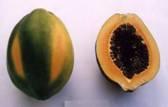
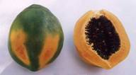
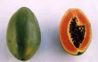
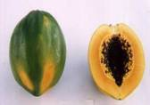
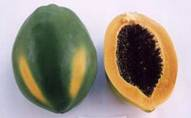
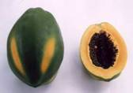
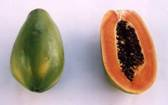
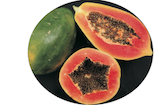
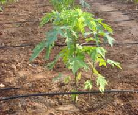
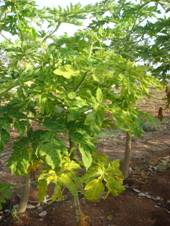

Papaya (Carica papaya L.)
Caricaceae
Varieties
CO 1, CO 2, CO 3, CO 4, CO 5, CO 6, CO 7, CO 8, Coorg Honey dew and Surya.
CO 3, CO 7 and Surya are gynodioecious (bisexual + female) types highly suitable for table purpose and CO 2, CO 5 and CO 6 are dual-purpose varieties for table and papain production.
 |
 |
 |
CO 1 |
CO 2 |
CO 3 |
 |
 |
 |
CO 4 |
CO 5 |
CO 6 |
 |
 |
|
CO 7 |
CO 8 |
|
Soil and climate
It is a tropical fruit and grows well in regions where summer temperature ranges from 35°C - 38°C. Tolerates frost and comes up to an elevation of 1200 m above mean sea level. Well drained soils of uniform texture are highly preferable to avoid the collar rot disease.
Sowing
500 g of seeds is required for planting one ha. June-September is the best season for planting. Avoid planting in rainy season.
Nursery
Treat the seeds with Captan @ 2 g/kg of seeds. Dibble four seeds in polythene bags in depth not exceeding one cm. Keep the polythene bags in partial shade. Watering can be done with the help of rose can. Seedlings will be ready in about 60 days.
Planting
Plant the seedlings at 1.8 m either ways in pits of 45 cm x 45 cm x 45 cm size.
Irrigation
Irrigate copiously after planting. Irrigate the field once in a week. |

Drip irrigation |
Application of fertilizers
Apply FYM 10 Kg/plant as basal and 50 g in each of N, P and K per plant at bi-monthly intervals from the third month of planting after removing unwanted sex forms. Apply 20g in each of Azospirillum and Phosphobacterium at planting again six months after planting.
Fertigation technique
Apply 10 litres of water per day + 13.5 g urea and 10.5 g muriate of potash/ week through drip irrigation and soil application of super phosphate 300g per plant at bimonthly intervals starting from 3-4 months after planting immediately after thinning of plants is recommended.
After cultivation
Male trees should be removed after the emergence of inflorescence maintaining one male tree for every 20 female trees for proper fruitset. In each pit only one vigorously growing female/hermaphrodite tree should be retained and other plants should be removed. In gynodioecious type like (Co 3 & Co 7) keep one hermophrodite type/pit and remove female trees.
Micronutrients
Spray ZnSO4 0.5% + H2BO3 0.1% during 4th and 8th month to increase growth and yield characters.
Plant protection
Nematodes
To control the nematode infestation in nursery, apply Carbofuran 3 G @ 1 g/polythene bag after germination.

Papaya ring spot virus |
Diseases
Papaya ring spot virus
Grow maize as catch crop for vectors. Spray insecticides to control the vectors. Micronutrient spray at fortnight intervals.
Root rot and wilt
In water stagnated areas root-rot may appear easily. It is advisable to drench the soil with 0.1% Methoxyethyl mercuric chloride or 1% Bordeaux mixture or Metalaxyl 0.2%, 2 or 4 times at fortnightly intervals. Good drainage is important to avoid the spread of disease.
Crop duration: 24 – 30 months.
Harvest
Fruits should be picked at colour break stage.
|
Yield
The average yield is as follows
-
CO2:200-250t/ha
-
CO3:100-120t/ha
-
CO5:200-250t/ha
-
CO6:120-160t/ha
-
CO7:200-225t/ha
- CO 8: 220- 230 t/ha
Papain extraction
Papain has several industrial uses, the important one being in brewing industries. It is used as “meat tenderiser” and in textile and leather “sanforization” processes and drugs.
The method of extraction of papain from papaya fruits is simple. The latex should be tapped from immature papaya fruits. Select 75 to 90 days old fruits. On the selected fruit, give incisions (cut) with a razor blade or stainless steel knife. The cuts should be given from stalk to tip of the fruit. The depth of the cut should not be more than 0.3 cm. Four such cuts are given spaced equally on the fruit surface. Tap the latex early in the morning and complete the tapping before 10.00 a.m. Repeat the tapping four times on the same fruit at an interval of three days. The cut should be given on the fruit surface in places not covered by previous cuts. The latex collected from all the trees in a day should be pooled, shade dried in an aluminium pan or tray and passed through a 50 mesh sieve to remove all foreign matter. In large plantations, vacuum driers can be adopted with advantage. Papain produced by artificial heating will have better colour and high quality. Add potassium meta-bi-sulphite (KMS) at 0.5 % for better colour and keeping quality.
The latex should be dried very rapidly at temperatures of 50° to 55° C. Stop drying when the dried product comes off as flakes having a porous texture. Powder the dried papain by means of wooden mallets or in electrically operated granulators and sieve the powder through 10 mesh sieve. Pack the powder in polythene bags in convenient quantities and seal them. Put the sealed bags in a tin container and seal it after evacuating air. Exposure to air deteriorates the quality of papain and vacuum sealing is therefore necessary. For large scale manufacture of papain, vacuum sealing machine and a granulator will be useful.
The green papaya fruits after extraction of papain can be used for pectin manufacture and “tutty – fruity” or they can be allowed to ripen and made into other products. The Co.2 and Co.5 varieties of papaya released by Tamil Nadu Agricultural University, Coimbatore are ideal for papain production. Tamil Nadu Agricultural University, Coimbatore, supplies pure seeds of these varieties.
Yield
The yield of crude papain is as follows:
CO 2 : 600 kg/ha
CO 5 : 800 Kg/ha
Seed Technology
Germination improvement: Store the seeds in airtight containers. Soak the seeds in 100ppm GA3 for16 hours or in 2% fresh leaf extract of arappu or 1% pungam leaf extract or pellet the seeds with arappu leaf powder.
Optimum depth of sowing: Sow seeds at 1cm depth for better germination and seedling growth.
Grading: BSS6 wiremesh sieve.
Storage: Dry seeds to 8-10% moisture and treat with halogen mixture containing CaOCl2, CaCO3 and arappu leaf powder (at 5:4:1 ratio)@3g/kg and pack in cloth bag to maintain viability upto 5 months.
Invigoration of old seeds
Stored seeds can be invigorated by soaking them in dilute solution of disodium phosphate (10-4 M) adopting 1:8 seed to solution ratio for 4 hours followed by drying back to original moisture content. |